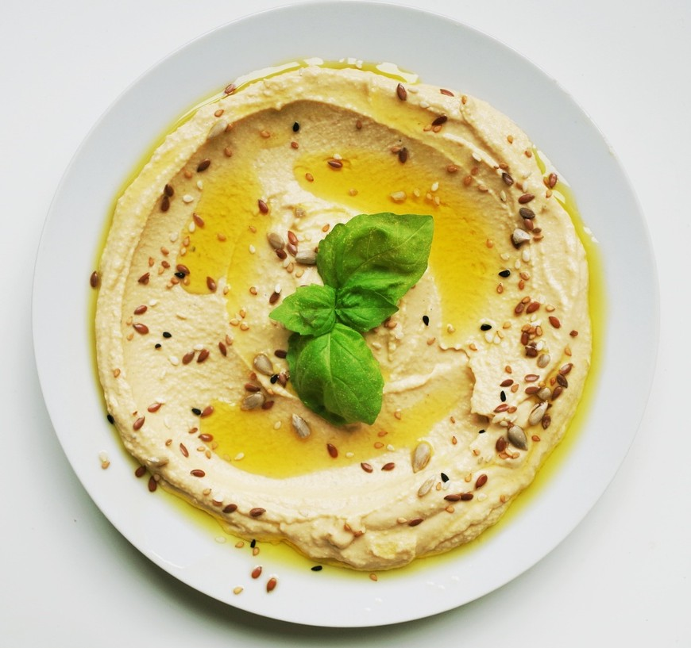

Hummus

Description
Arabic for chickpeas, this Middle Eastern dip goes well with
warmed pita and great as a sauce for falafel, chicken, or eggplant. It can be
prepared by hand or more easily made with a food processor.
Ingredients
- 2 15oz cans of chickpeas
- 1/3 cup tahini (sesame paste)
- 2 lemons or 6 tablespoons lemon juice
- 4 garlic cloves
- 2 tablespoons water
- 1 tablespoon cumin
- 1/2 tablespoon paprika
- 1 tablespoon or more olive oil (to taste)
- Optional: parsley garnish
- Optional: 1/2 teaspoon salt
Steps
- Drain chickpeas and add to food processor with garlic, gently pulsing a few times.
Leave the mix chunky for now.
- Add tahini and lemon juice and process until relatively smooth.
- Add salt if desired, and slowly add water and pulse food processor until mix no longer looks dry or crumbly.
- Scoop out of food processor and place in plate or bowl with paprika dusted on top.
- Using a spoon create a crater in the center and pour olive oil to fill.
Add parsley garnish and serve.
Return to recipe home